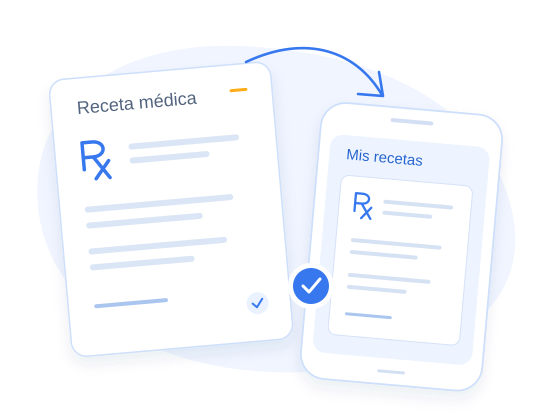

El médico prepara y emite.
Busca la medicación en el vademécum y completa las indicaciones desde la consulta.
Recetas
El médico la prepara y emite en Alvia. Tus afiliados la encuentran en la app para descargarla o compartirla.
Quiero ver una demo
Busca la medicación en el vademécum y completa las indicaciones desde la consulta.
La encuentra en Mis recetas. Cuando el PDF está listo, puede abrirla, descargarla o compartirla.
Cuando el PDF está listo, puede abrirla, descargarla o compartirla.
La emisión y la preparación del PDF pueden demorar. Mientras la app muestra «Generando» o «Preparando», el documento aún no se puede abrir. Si aparece «No disponible», no hay un PDF listo para descargar.
Las consultas originadas por invitación permiten revisar los datos del paciente, pero no emitir recetas.